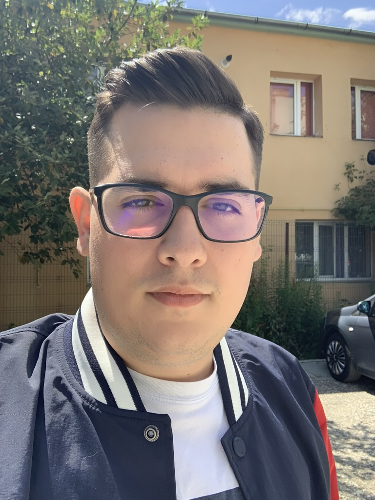

Titus Chirila

Summary
Technical Producer turned Web Developer looking for an opportunity to further and diversify software development knowledge by shifting focus on developing web development knowledge. Willing to take on any projects which will aid me in furthering my development in this new area.
Experience
💻 TECHNICAL PRODUCER, FUNDAMENTALVR, LONDON, UNITED KINGDOM
November 2015 – August 2023
- Helped manage a number of high profile and cutting edge VR projects from start to finish
- Took ownership of aspects related to managing and improving company use of Jira, Confluence, Google Sheets and Google Apps Script (and all associated integrations)
- Developed tools that help projects (and the dev team as a whole) track budgets, costs, variances; additionally, developed the means for these tools to be easily incorporated and synced in any location company-wide.
💻 FINANCE MANAGEMENT TRAINEE, NHS TOWER HAMLETS CCG, LONDON, UNITED KINGDOM
August 2015 – August 2016
- Attained finance and reporting knowledge in a demanding, deadline driven environment.
- Helped deliver finance training to non-finance senior management, as well as new members of the Finance team, provided general finance support and taken responsibility for key areas.
- Gained experience in finance-related areas such as budgeting, forecasting, accounts payable and receivable, as well as purchase orders (including the security elements).
💻 FINANCE MANAGER, WBC, LONDON, UNITED KINGDOM
November 2014 – October 2016
- Taking part in projects in areas that include IT Consultancy, Marketing Consultancy and Growth Consultancy.
- Developing advanced knowledge in different areas of a business that include marketing and business development aspects.
💻 INTERN, REWE INTERNATIONAL AG, VIENNA, AUSTRIA
July 2014 – July 2014
💻 INTERN, BILLA ROMANIA, PLOIESTI, ROMANIA
May 2014 – May 2014
💻 SUPPLY CHAIN MANAGEMENT ASSISTANT, ARC ELECTRONIC, BRASOV, ROMANIA
July 2012 – September 2012
Education
🎓 MSC PROJECT MANAGEMENT, FINANCE AND RISK
Sep 2017 to Jan 2019 - Achieved 1 - City, University of London
- Modules completed include: Project Lifecycle, Managing Project Risk and Uncertainty, Optimisation and Decision Making, as well as Financial Engineering.
🎓 BA (HONS) BUSINESS MANAGEMENT
Sep 2013 – Jul 2017 - Achieved 1 - University of Westminster, London
- Modules completed include: Professional Competences, Business Context, Financial Information, Making Management Decisions, Financial and Human Resource Management.
🎓 “Dr. Ioan Mesota” National College, Brasov, Romania
Sep 2009 – Jul 2013
- Study profile based mainly upon Mathematics and Computer Science.
- Achieved an equivalent of 1st in the Romanian Baccalaureate Exam: Romanian Language and Literature (8.10/10.00), Mathematics (9.50/10.00), Computer Science (8.90/10.00)
Knowledge & Skills
- Full clean driving license.
- Obtained Prince2 Project Management knowledge attained via the Foundation and Practitioner certifications.
- Intermediate knowledge of C++ and Javascript; Basic knowledge of Borland Pascal.
- Proficient in speaking German (proven by the “Deutsches Sprachdiplom” certificate).
- Proficient user of Microsoft Word, Excel, PowerPoint (justified through the “ECDL” certificate), as well as GSuite software (thanks to professional exposure)
- Some knowledge of database management programs such as Microsoft Access and Visual Fox.
- Basic user of Tableau and Microsoft PowerBI.
- Tech knowledge attained through a passion for the field.
Interests
- Gaming - currently ranking at ~ top 0.3% of global Rocket League players
- Participated in a number of social and environmental volunteering activities over the years.
- Participated in AIESEC (Association Internationale des Étudiants en Sciences Économiques et Commerciales) events during school years.
- Making the most of travel opportunities, with visited countries that include Austria, Germany, Greece, Netherlands, Italy, Iceland, Turkey and Switzerland.
- Taking part in sport activities, such as football, tennis, and skiing.
- More gaming
References
Available on request.